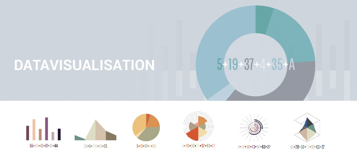
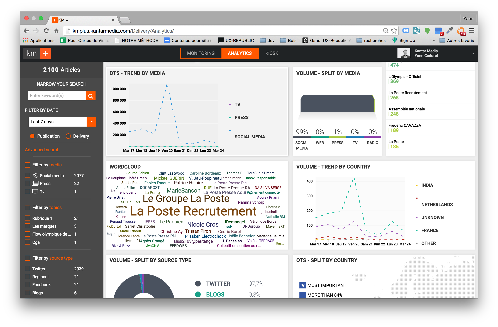
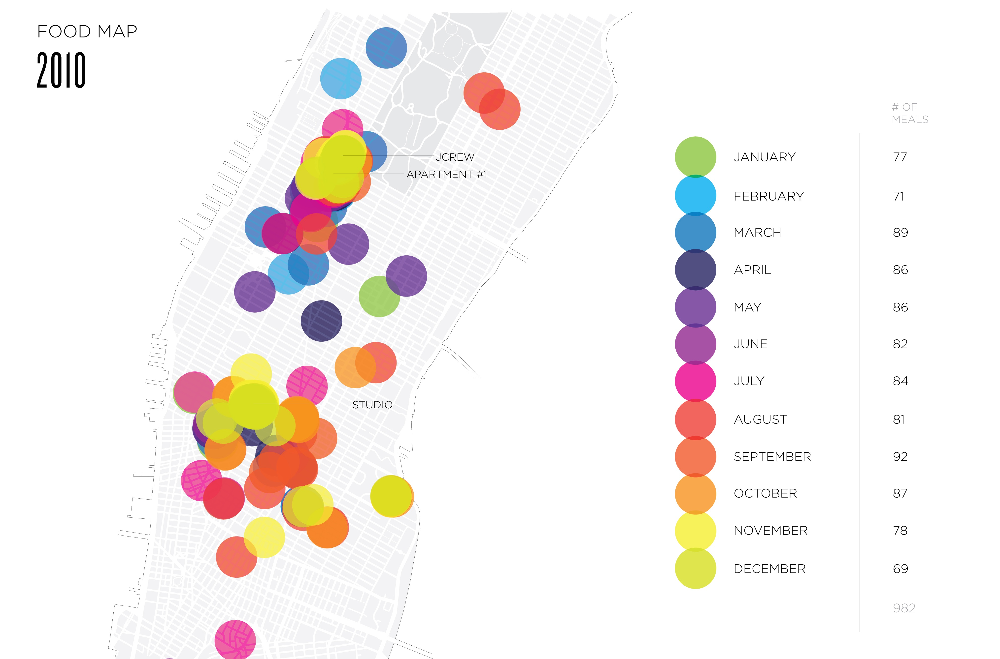
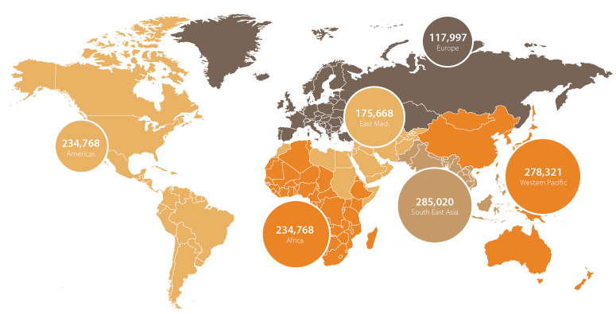
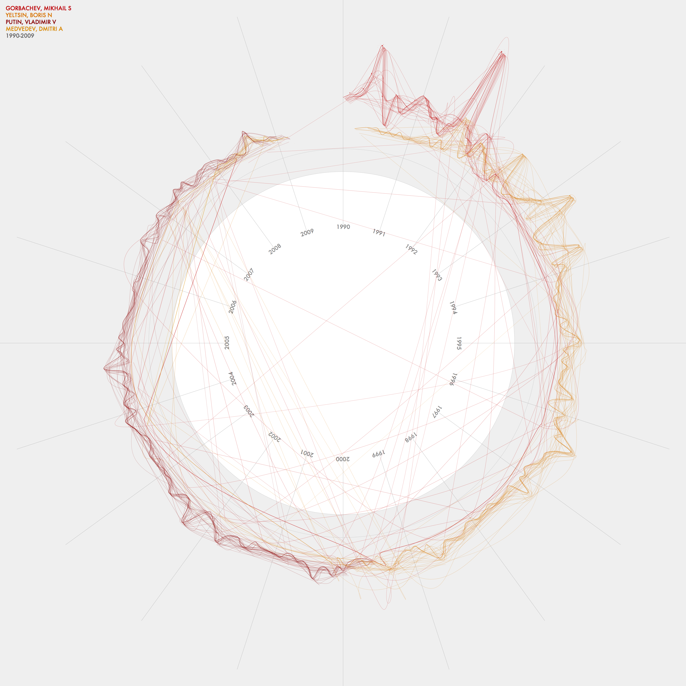

Votre navigateur ne supporte pas les fonctionnalités nécessaires. J'ai utilisé impress.js, Si vous ne mettez pas à jour votre navigateur, vous n'aurez accès qu'à une version dégradée...
Pour une expérience optimisée, utilisez la dernière version de Chrome, Safari ou Firefox browser.
JS-Star Meetup #1
Datavisualisation Nouvel enjeu d'une meilleure expérience utilisateur.
Yann Cadoret (UX-Scientist & CoFounder @ UX-Republic)
UNE DATAVISUALISATION ??
Une Datavisualisation est la représentation graphique d’un ensemble de données.

ILLUSTRER POUR EXPLIQUER
Cette représentation doit être claire, simple et offrir une lecture basée sur une compréhension visuelle par représentation ou par association.
Elle peut illustrer un contenu ou être le contenu elle-même.
LES DATAVIZ SONT AUSSI ANCIENNES QUE LE MONDE IT (OU TOUT COURT)
Il y a encore quelques années, ces représentations n’étaient que de simples images statiques générées par un serveur ou un logiciel avant d’être retournées.
Les performances disponibles côté client permettent aujourd'hui d'offir une interactivité.
Javascript
HTML5*
SVG
CANVAS
Le CANVAS manipule des pixels qu’il colore un à un.
Le SVG défini le positionnement de deux points de jonctions entre lesquels des lignes sont tracées.
Ces deux technologies sont exécutées côté client et peuvent donc disposer d'interactions de manière autome simplement à l'aide de Javascript par exemple.
TABLEAU DE BORD COMPOSÉ EN SVG*

REPRÉSENTATIONS EN SVG

REPRÉSENTATIONS EN SVG

Le meilleurCHOIX dépend du besoin
du parc d'écrans à couvrir...
L'OPEN DATA
Parralèlement à l'émergence de ces nouvelles possibilités, de fantastiques volumes de données sont devenus disponibles :
On parle de 'Open Data'
Des données publiques et mises à disposition peuvent être récupérées et exploitées gratuitement.
Elles sont le plus souvent servies par d’API.
La datavisualisation nous permet de créer de la valeur par la donnée et son interprétation.

LA FRANCE : UN PAYS GÉNÉREUX EN DONNÉES
Nous avons de la chance !
La France brille par ses volumes de données disponibles en se situant dans le TOP3 !
(source)
QUELQUES EXEMPLES DE JEUX DE DONNÉES COMPLETS & DISPONIBLES
- Les services de transport,
- Les élections et leurs résultats,
- Les dépenses publiques pour certains pays,
- Le enregistrements des entreprises,
- Les cartes nationales,
- Les statistiques publiques,
- Les lois,
- Les codes postaux,
- La pollution de l’air.
QUELQUES ASTUCES POUR VOUS AIDER
Afin de vous aider à construire des tableaux de bords
complets, adaptés et efficaces.
Voici une check list de quelques questions à vous poser :
À qui sont destinées les données ?
Quelles sont les motivations de les mettre à disposition ?
Quel est le service rendu ?
DES QUESTIONS "RÈGLES D'OR"
Quel élément porte l’importance et la valeur ?
La donnée elle-même ?
Son volume ?
Son évolution ?
Sa valeur à date, sa moyenne ?
Sa représentation doit-elle être à l’échelle ?
Parfois, déformer l’espace et ses proportions permettra d’attirer l’attention et de mieux transmettre votre message sans pour autant en galvauder son sens.
La position, leur rotation, leur ordre d'apparition et leur taille donne du sens à vos données et représentations
Reste à repousser la dernière des limites que le HTML5 et ses sous-ensembles ne peuvent repousser seuls :
Votre Imagination
Et nous vous rappelons que ce Meetup n'est que le premier !